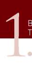

Yarı otomatik tabanca ile temel atış teknikleri, yarı otomatik tabanca ileri seviye atış tekniklerinin alt yapısını oluşturur Şekil-1) Temel Atış Teknikleri İstasyonu (Yarı Otomatik Tabanca) 31

B. MP5 MAKİNALI TABANCA İLE TEMEL ATIŞ TEKNİKLERİ
Temel Prensipler
a) Duruş
b) Tutuş
c) Nişan Alma
d) Nefes Kontrolü
e) Tetik Çekme
a) DURUŞ
MP5 makinalı tabanca ile atış öncesinde duruş, otomatik tabancada benzetme yaptığımız boksörün duruşuna (gardını alışına) benzer. Duruş, şöyle olmalıdır:
1. Ayaklar omuz genişliğinde açık olmalı, ayakucu hedefi gösterir şekilde durmalı ve destek alınan ayak, üzerinde durulan ayağın hafifçe önünde olmalıdır.
2. Dizler hafifçe kırılmalıdır (esnek tutulmalı).
3. Ağırlık, ayaklar arasında dengeli dağılmalı; ayaklar, zeminde yatay pozisyonda durmalıdır.
4. Göğüs, belden öne doğru hafifçe eğilmelidir (Öne eğilme, silahın geri tepmesini kontrol için çok önemlidir.)
5. Her iki kol, mümkün olduğunca silaha yapışık ve vücuda doğru kırık durumda tutulmalıdır.
6. Baş dik durumda ve hedefe dönük olmalıdır. (Bakınız Resim-2.a)